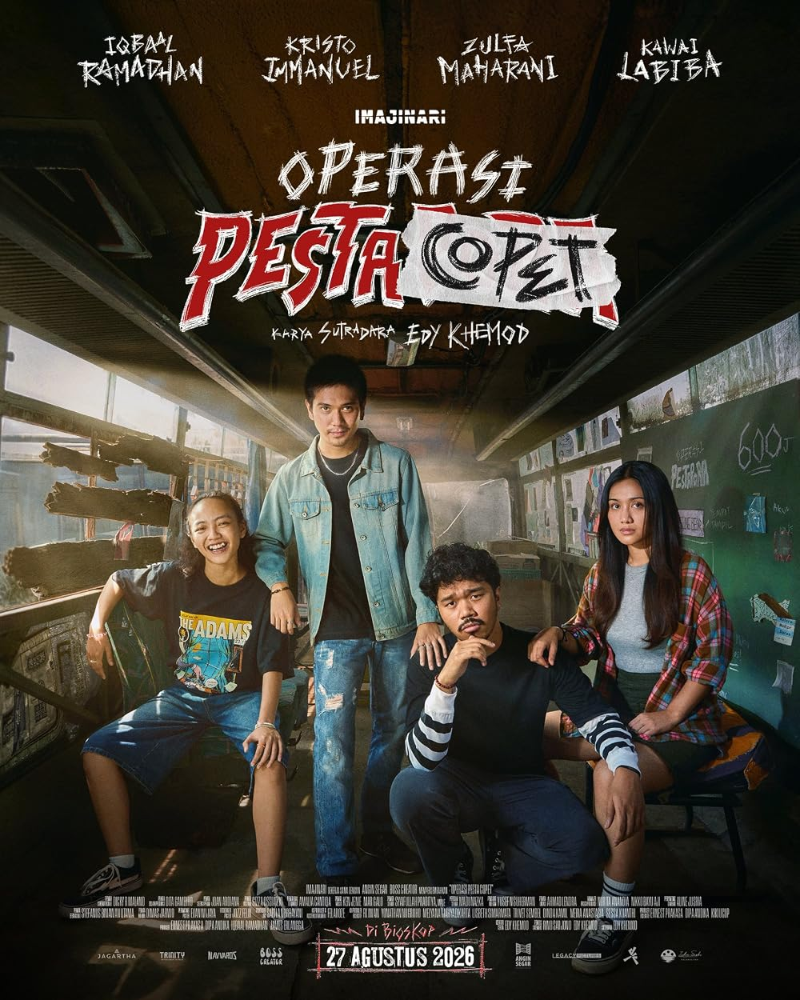
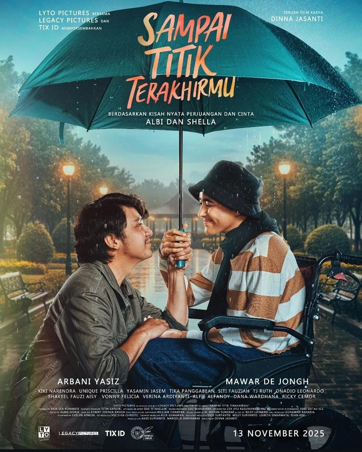
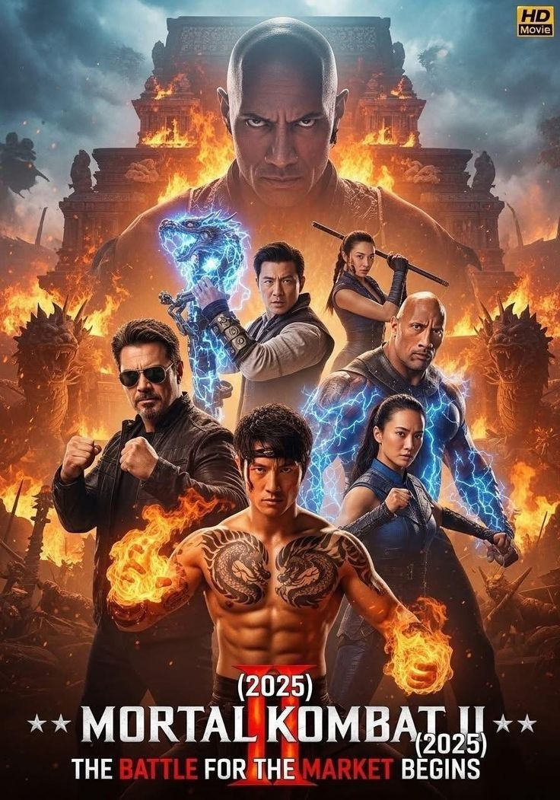

Film-Film Pilihan
1. PESTA COPET
Pesta Copet adalah istilah yang sering digunakan secara sarkastik atau bercanda untuk menggambarkan situasi keramaian padat—seperti konser, pasar malam, terminal, atau transportasi umum saat jam sibuk—yang dianggap rawan aksi pencopetan karena banyaknya orang berdesakan dan perhatian yang teralihkan.
Harga Tiket: Rp. 35.000,00

2. GHOST IN THE CELL
Ghost in the Shell adalah waralaba fiksi ilmiah cyberpunk asal Jepang, awalnya berupa manga karya Masamune Shirow (1989), yang kemudian diadaptasi menjadi anime film (1995), serial anime Stand Alone Complex, hingga film live-action Hollywood (2017) yang dibintangi Scarlett Johansson.
Harga Tiket: Rp. 30.000,00

3. Agak Laen
Film komedi horor ini mengisahkan Bene, Boris, Oki, dan Jegel yang mengelola rumah hantu di sebuah pasar malam, tapi selalu gagal menarik pengunjung karena rumah hantunya kurang seram — sampai suatu hari mereka merenovasinya agar lebih menegangkan. Setelah itu, muncul kejadian tak terduga yang bikin rumah hantu mereka jadi viral, dan berbagai masalah pun bermunculan
Harga Tiket: Rp. 35.000,00

4. Sampai Titik Terakhir
Film ini dibintangi Arbani Yasiz sebagai Albi Dwizky dan Mawar Eva de Jongh sebagai Shella. Ceritanya dimulai dari Albi, seorang perantau pendiam yang tak berani bermimpi muluk-muluk, hingga pertemuannya dengan Shella secara tak sengaja menumbuhkan benih cinta di antara mereka. Hubungan yang awalnya manis dan penuh harapan itu kemudian diuji ketika Shella didiagnosis menderita kanker ovarium, dan di sisa waktu yang ada, Albi memilih tetap bertahan menemani setiap detik perjuangan Shella. Bahkan di masa-masa tersulit, Albi memilih menikahi Shella sebagai bukti cinta sejati mampu bertahan menghadapi badai terberat.
Harga Tiket: Rp. 40.000

5. Mprtal kombat II
sekuel film aksi fantasi laga (2026) garapan Simon McQuoid, melanjutkan kisah para juara Earthrealm (Liu Kang, Sonya Blade, Jax, Cole Young) yang kini harus menghadapi turnamen Mortal Kombat sesungguhnya melawan Outworld pimpinan Shao Kahn. Bergabung pula Johnny Cage (Karl Urban), mantan bintang laga yang direkrut Raiden untuk ikut bertarung demi nasib Bumi. Dibintangi Karl Urban, Adeline Rudolph, Tati Gabrielle, Lewis Tan, dan Jessica McNamee.
Harga Tiket: Rp. 35.000,00

Film yang Akan Datang
- Film Pilihan jalangkung
- Film Pilihan Agak lain 2
- Film Pilihan Speeder-man